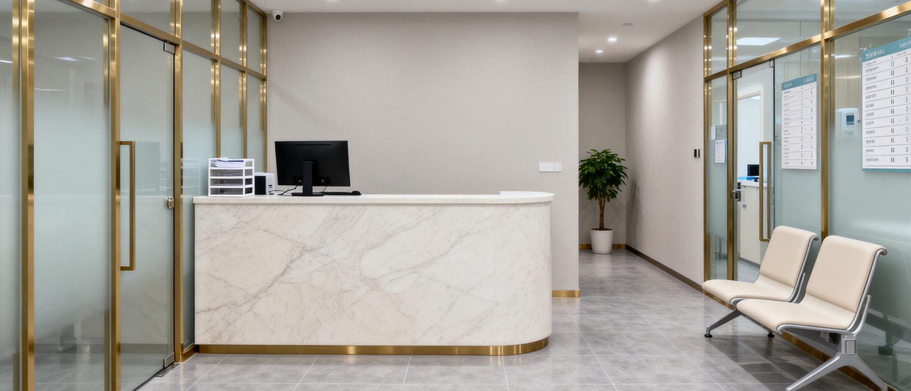
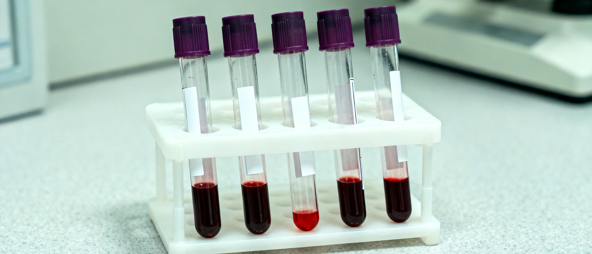
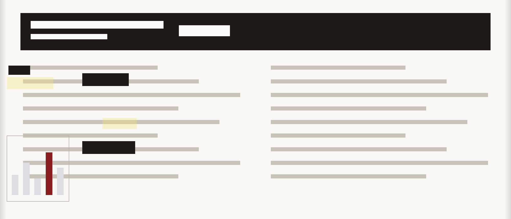

血液整容？危险的新趋势
年轻女性为“变美”尝试血液疗法，专家警告存在严重健康风险

一间提供“血液美容”服务的私人诊所内景。
本刊记者暗访拍摄。
一种被称为“血液整容”的美容方式近期在香港年轻女性中悄然流行。 声称通过抽取自身血液、处理后重新注射，可以改善皮肤、 延缓衰老甚至“改变面部轮廓”。
但医学专家警告，这类操作风险极高， 部分诊所甚至使用来源不明的血液制品。
什么是“血液整容”？
据本刊调查，所谓“血液整容”大致分为两种：
- 抽取自身血液，离心后提取“生长因子”，再注射回面部。
- 使用他人（通常是年轻女性）的血液制品，声称能“替换衰老血液”。
前者属于医疗美容范畴，但操作不规范极易感染。 后者则完全没有科学依据，甚至可能触犯法律。
专家：这是伪科学
香港大学医学院一名不愿具名的教授向本刊表示：
更危险的是，一些机构把年轻女性当成血液来源， 这已经超出了美容的范畴。”
该教授指出，血液制品涉及感染、免疫反应等风险， 必须在严格医疗监管下使用。

诊所内用于“血液美容”的样本管。
来源标注不明。
与美容机构的关系
本刊发现，部分推广“血液整容”的诊所， 与本地某些美容机构存在合作关系。
这些美容机构通常以“形象设计”“艺人培养”为名义， 招募年轻女性成为会员， 然后向她们推荐所谓“高级护理项目”。
一位曾接受过相关服务的女性向本刊透露：
后来就开始抽血。一次比一次多。
我问为什么，他们说是‘为了我的皮肤’。”
该女性目前已停止接受服务，但拒绝透露机构名称。

某美容机构内部宣传资料中关于“血液管理”的内容。
图片经过遮挡处理。
警方回应
本刊就相关问题向警方查询。 警方表示，目前没有接到相关报案， 但会关注此类新兴美容方式是否涉及非法行医或人口贩卖。
请立即报警。”
本文基于记者暗访及公开资料整理。
文中未点名任何具体机构。
如有进一步线索，欢迎联系本刊调查组。